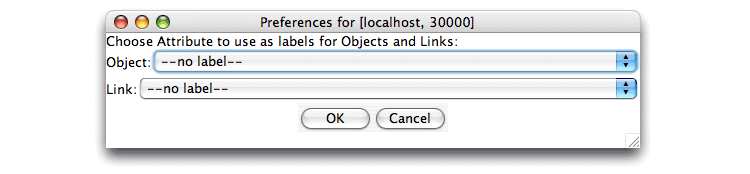

Proximity lets you customize the labels used to display objects and links in the Proximity Database Browser. You can use the value of any object or link attribute as a label for the corresponding type of database element. Labels are set globally and apply to all objects or links.
Exercise 4.5. Customizing object and link labels:
Before beginning, make sure that you are serving the ProxWebKB database using Mserver. Start the Proximity Database Browser if it is not already running.
-
From the File menu, choose Preferences. Proximity displays the Preferences dialog.
 -
In the Object list, choose url. In general, you should choose an attribute that has a unique value for each object.
-
In the Link list, choose link_id. Again, you should generally choose an attribute that has a unique value for each link.
-
Click OK. Proximity closes the Preferences dialog.
-
Click Objects. Proximity displays the first 200 objects. Because you set the display preferences to use the value of the url attribute as the object label, Proximity shows you the URLs for these objects instead of their ID numbers.

Proximity limits the display of object and link labels to 25 characters, making this feature of limited usefulness for this specific database. Future Proximity development may allow users to change this character limit.
-
Click Home to return to the Proximity Database Browser start page.
-
Click Links. Proximity displays the first 200 links. Because you set the display preferences to use the value of the link_id attribute as the link label, Proximity shows you these values instead of their Proximity ID numbers.
-
Because these new labels do not provide any additional useful information, change the display preferences back to
no labelfor both objects and links. The remaining tutorial examples continue to use Proximity IDs to label objects and links in the Proximity Database Browser.